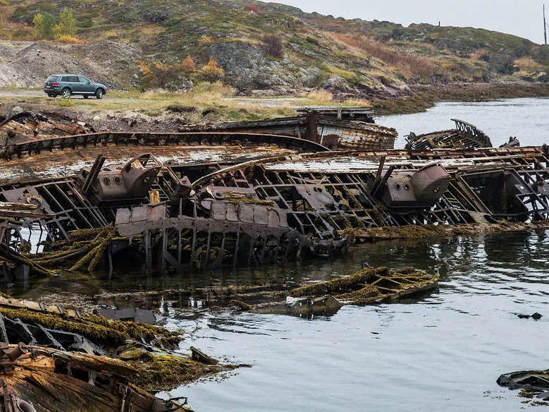

[01] Лоция69°09′ с. ш. · 35°08′ в. д.
Последняя точка на карте и тёплый дом
Двенадцать номеров на берегу Баренцева моря. Отсюда видно сияние, китов и край земли — из окна или с крыльца.
[01] Лоция69°09′ с. ш. · 35°08′ в. д.
Двенадцать номеров на берегу Баренцева моря. Отсюда видно сияние, китов и край земли — из окна или с крыльца.
Лист 1 · Берег у отеляВид на север · сентябрь

Демо · фото Териберки: Ninara, CC BY 2.0